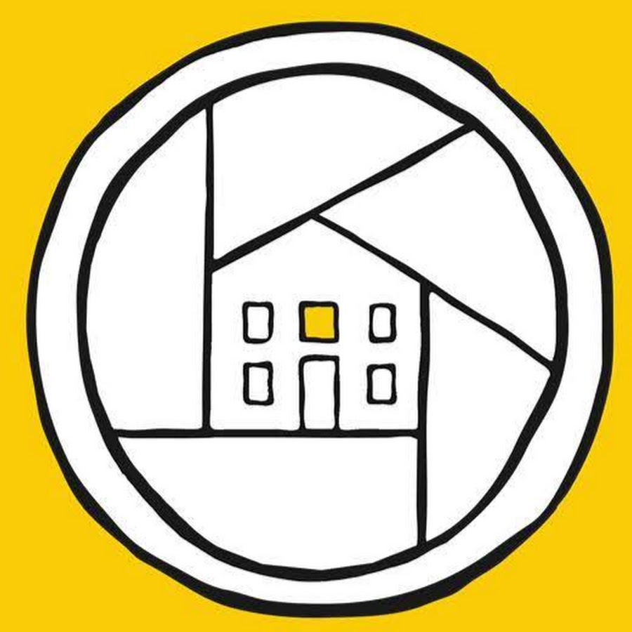
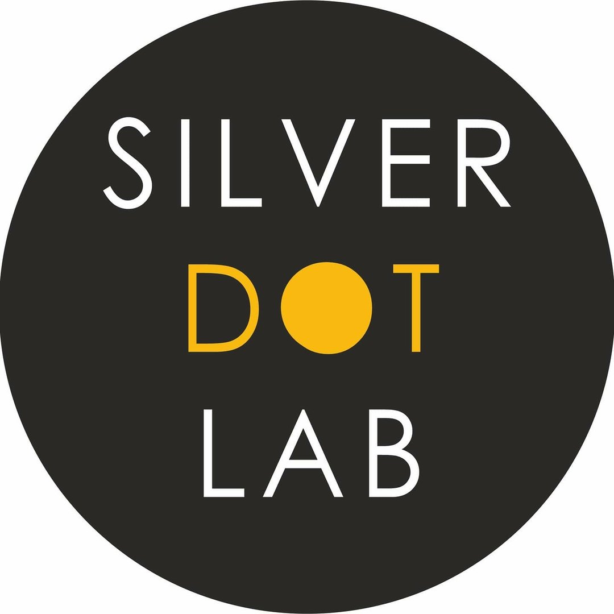
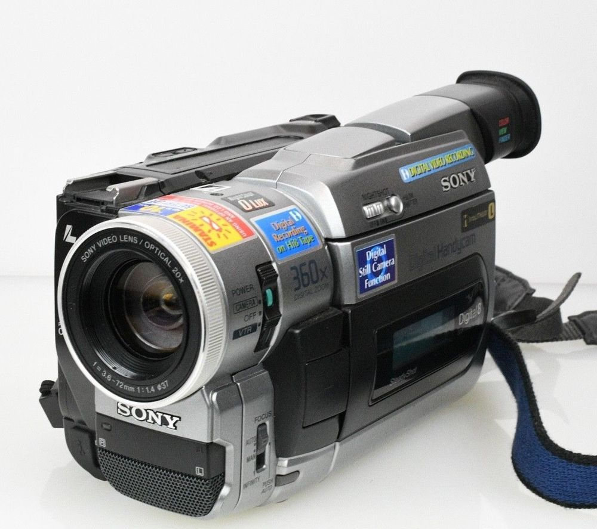
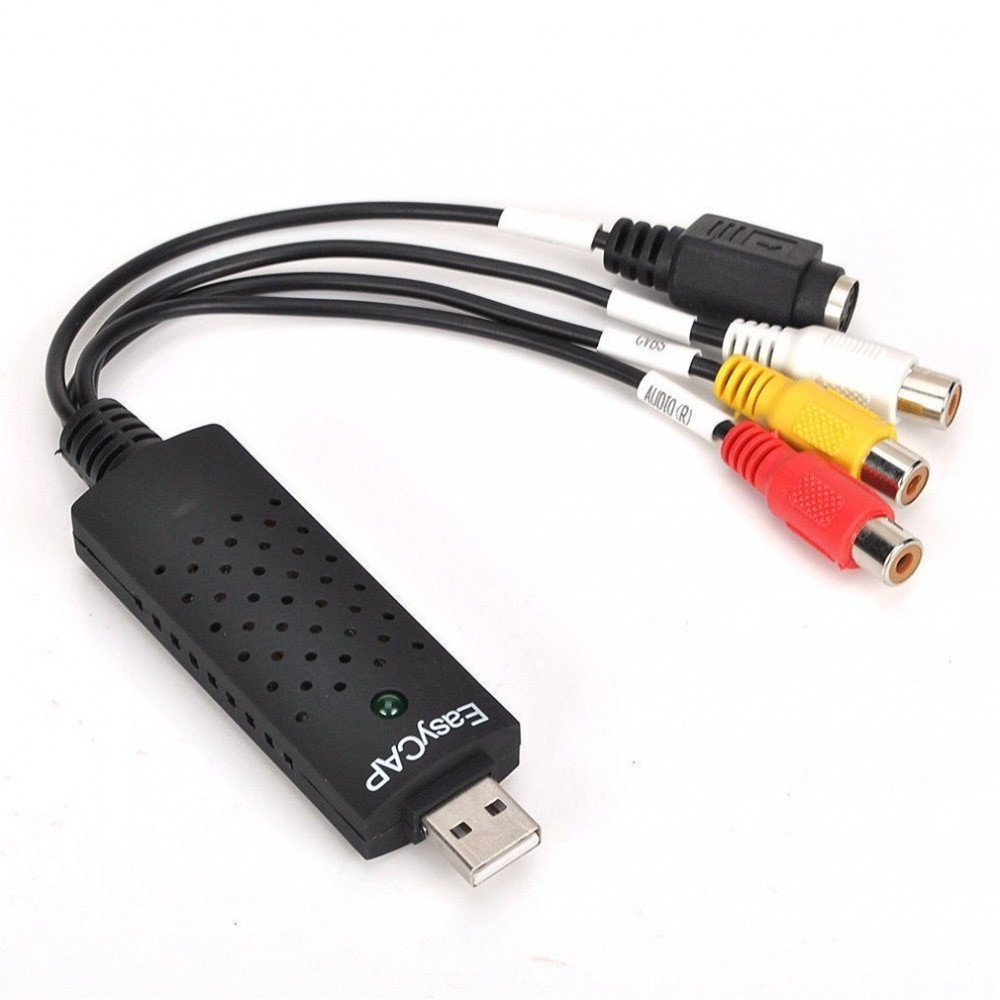
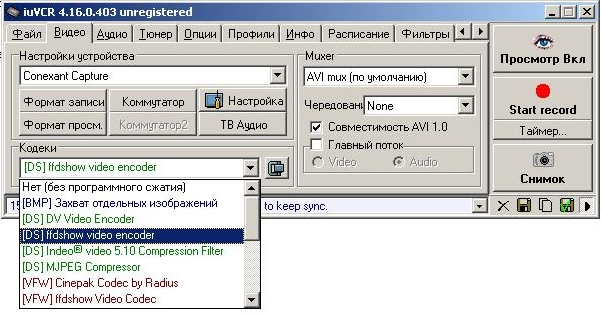

Все любят плёночный эффект на фотографиях. Однако не многие знают и понимают как такой эффект достигается на самом деле без использования фильтров и цветокоррекции цифровой фотографии.
На деле это очень сложный технологический процесс, который не дает права на ошибку. Существует два варианта: выполнение процедур на дому или в специализированной лаборатории. Мы рассмотрим второй.
Почему же большинство профессионалов прибегают к услугам лаборатории и не выполняют работу по проявке и сканированию дома?
Во-первых, процесс проявки требует наличия определенного помещения, в который не поступает ни капли света, иначе есть шанс испортить светочувствительное покрытие плёнки.
Во-вторых, требуется наличие определённой химии и приспособлений для проявки: проявители, фиксажи, дистиллированная вода, бочонки для плёнки и т.д. Это затрачивает много финансов и времени.
В-третьих, процесс очень сложный и права на ошибку нет. Представьте что Вы сделали крутые кадры, уже получили деньги от заказчика и попросту портите все кадры из-за малейшей ошибки: недолили проявителя или случайно открыли дверь в помещении и засветили плёнку. Намного надёжнее отдать плёнку профессионалам, которые выполняют этот процесс уже на автоматике и дают какие-никакие гарантии на свою работу.

Фотосквот - это одна из двух лабораторий в Минске, куда бы я без сомнений отдал свою плёнку на выполнение процедур проявки и сканирования. Это место стало отправной точкой в мой мир аналоговой фотографии. В Фотосквоте можно купить плёнку практически любого формата, отдать свои плёнки на процедуры, помимо этого тут можно приобрести себе камеру или отремонтировать свою, а также тут регулярно проводятся мастер-классы по проявке, фотографированию и так далее.
Тут я купил первую плёнку и был постоянным клиентом на протяжении нескольких лет, пока они не переехали в место, куда мне добираться было тяжело и пришлось искать лабораторию с более удобным расположением.

А вот и та самая новая фотолаборатория, про которую я недавно рассказывал. Это SilverDotLab и это место я посещаю ежемесячно уже около трёх лет.
Главным преимуществом этой лаборатории является её расположение. Она находится в самом центре Минска, возле вокзала. Доехать до неё можно как на метро, так и на большинстве автобусов.
Помимо этого стоимость услуг, материалов и плёнок тут была практически всегда ниже чем в Фотосквоте, а для студента это определенно плюс.
Меня, как клиента, всегда удивляло отношение персонала к тебе. Ты можешь прийти отдать плёнку на проявку, а уйти с подарком. Это всегда приятно.
В SilverDotLab часто проводятся акции на услуги и покупку плёнки. К примеру пару недель назад, в честь Дня рождения, можно было абсолютно бесплатно воспользоваться услугами проявки и сканирования.
Ставим этому заведению пять звёзд!
Кассеты это еще одно напоминание из нулевых, которое сегодня набирает обороты. Мы рассмотрим вариант когда у Вас есть камера и кассета типа Hi8, но на самом деле тип кассеты не имеет значения, все действия выполняются аналогичным способом.

Есть такие же два варианта: оцифровать кассету дома или отдать в лабораторию. Но в случае кассет мы рассмотрим домашнюю оцифровку, потому что необходимое оборудование для этого окупается за несколько раз.
Для оцифровки нам потребуется компьютер и карта видеозахвата с выходом на "тюльпан" или S-Video в зависимости от того, какой выход предусмотрен в Вашей камере.

Карта видеозахвата стоит недорого, примерно 5 долларов на AliExpress. Подключение происходит через USB-A, затем к карте захвата подключается комплектный кабель камеры и кабель подключается к камере.
Для записи видео необходим какой-либо софт. Я использую iuVCR, потому что он имеет обширный выбор настроек: формат записи видео, битрейт, таймер остановки записи и др.
Приложение является достаточно старым, но не устаревшим, так как он полностью покрывает потребности качества формата записи на кассеты.

В этой статье мы разобрали способы оцифровки аналогового формата визуальной информации. Начинающему фотографу или оператору поначалу это покажется непонятным, однако ничего страшного за этим не стоит, необходимо лишь немного углубиться в эту тему и разобраться. Удачи!